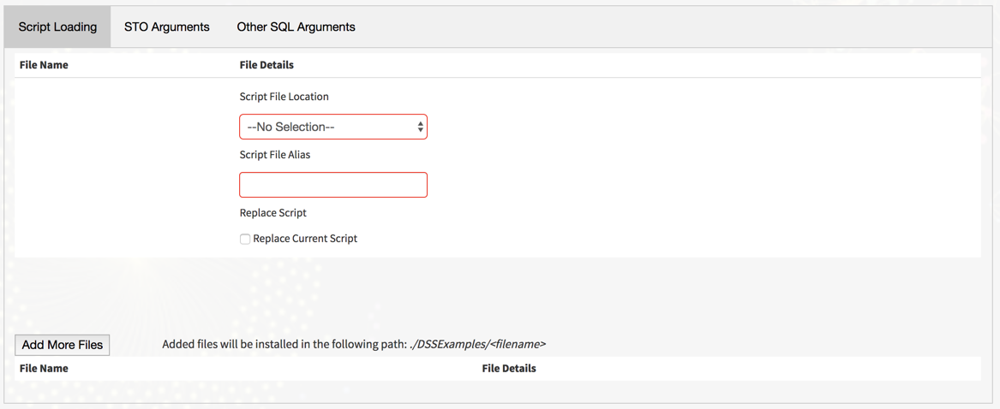

V. Using the Teradata SCRIPT Table Operator Plugin
This section assumes that a Dataiku DSS project already exists and input datasets have already been imported. Note that recipes need a non-empty dataset as input to run.
There are three (3) main tabs containing arguments used to install/replace the script files on the Advanced SQL Engine Database and/or invoke the SCRIPT Table Operator (STO).
Script Loading
)
- Script File Name
- The name of the script file to be uploaded.
- This is the main script used in the SCRIPT Table Operator.
- Depending on the selected Script File Location this input changes:
- If the script is on the Vantage Server – A text input field is provided to enter a file name.
- If the script is in the DSS Managed Folders and DSS Notebooks – A drop-down box containing a list of the files under their respective locations is provided.
- The Script File Name will not appear until the Script File Location is selected.
- Script File Location
- The location of the script to be installed, either on the Vantage server, a DSS Jupyter Notebook, or a DSS Managed Folder
- Script File Alias
- The file alias to be used in the SQL statement
- This is mainly used by the SCRIPT Installation/Replace process in the metadata tables.
- Script File Address
- The fully qualified file location on the Vantage Server
- This only appears if the selected option for Script File Location is “Vantage Server”
- Add More Files
- This button allows the user to have additional files installed in the Vantage Advanced SQL Engine.
- There is a file path specified to the right of the button in which the additional files are installed.
- This may normally be used in instances where the user’s main script references an additional file.
- Additional Files:
- File Name
- This is the file name of an additional file.
- Similar to the Script File Name it is a Text Field for files located in the Vantage Advanced SQL Engine and a drop-down box if DSS Managed Folder is selected as the File Location
- File Location
- The location of the file to be installed, either on the Vantage server or a DSS Managed Folder
- File Address
- The fully qualified file location on the Vantage server
- Similar to the Script File Address this only appears when "Vantage Server" is selected as the file location.
- File Format
- Specifies whether the additional file to be installed is a BINARY or TEXT file.
- File Name
SCRIPT Table Operator Arguments
 )
)
Script Type
- The type of script to be used typically Python or R'
- Script Command
- This is a Text area where the user can enter a custom Script Command.
- This argument only appears if the selected Script type is “Other”.
Script Arguments
- The arguments for the script, place one argument per box. Click on the (+) button to add more arguments'
ON
- The ON Clause used as the input data for the script
- If UNMODIFIED the clause defaults to “SELECT * FROM {input_table}”
Customize the ON clause
- A checkbox which specifies whether the ON clause should be modified.
HASH BY
- A HASH BY clause will cause the rows in the ON clause to be redistributed to AMPs based on the hash value of the column(s) specified'
PARTITION BY
- A PARTITION BY clause will cause the STO to execute against specific groups (partitions) based on the column(s) specified
ORDER BY
- 'An ORDER BY clause specifies the order in which values in a group (partition) are sorted
LOCAL ORDER BY
- A LOCAL ORDER BY clause orders the rows qualified on each AMP
RETURNS
- RETURNS NAME
- The first column under returns
- Specifies the name of the column(s) to be returned by the STO'
- RETURNS TYPE
- The second column under returns
- Specifies the data type of the column(s) to be returned by the STO
- RETURNS NAME
OTHER SQL Arguments
 )
)
Select Columns
- Specifies the contents of a user customized SELECT statement (data to be returned by the query)
- Default is to SELECT all column(s) in the RETURNS clause
Customize Select Columns Checkbox
- Determines whether the SELECT (output) columns (data to be returned by the query) should be modified.
Additional Clauses
- Specifies any additional clauses to the output such as a HAVING or QUALIFY clause
Running the SCRIPT Table Operator Plugin
After setting up the arguments, click on the [RUN] button to run the SCRIPT Table Operator.
 )
)